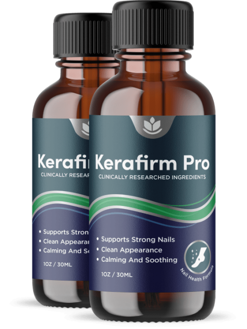

KeraFirm Pro
Product profile · Marketplace data 2026-10-09 · Sales-page research 2026-10-09 · Categories: Animals & Pets

Marketplace record
| Product type | Deliverable |
|---|---|
| Price | $158.00 (Single payment) |
| Affiliate commission | 65% |
| Refund window | Per the vendor's sales page — check the official page before buying |
| Vendor | KeraFirm (listed since 2026-09-01) |
| Marketplace stats* | Cart conversion — · cancel rate — · affiliate earnings/sale $102.70 |
* Vendor-side marketplace statistics reported by Digistore24; they depend on traffic quality and are not a forecast.
Vendor's marketplace description
Explosive Doctor-Endorsed Toenail Fungus Offer! High buyer intent, strong early EPCs, and proven scalability across Facebook, native, and email. Simple applicator-based solution with broad appeal. Limited spots available.
From the vendor's sales page
Page title: KeraFirm Pro - Text Presentation
Meta description: KeraFirm Pro - Text Presentation
Headline
A Breakthrough Applicator Formula That Supports Clear, Healthy Nails and Skin
In every bottle of KeraFirm Pro, you’ll find:
Order 6 Bottles and Get 3 FREE Bonuses !
Section headlines
- Every 6 Bottles Order Comes With FREE Shipping
- 100% Satisfaction 60-Day Money Back Guarantee
Prices mentioned on the page: $79 · $67 · $69 · $9.99 · $15.95
Guarantee language found: “60” — always confirm the current terms on the official page before relying on it.
Opening copy
Kerafirm Pro is a targeted, easy-to-use applicator solution created for people struggling with stubborn toenail fungus and the daily frustration of treatments that don’t deliver lasting results.
Instead of focusing on surface-level fixes or temporary cosmetic improvements, Kerafirm Pro is designed to address the problem at its source with a precision applicator that delivers the formula directly where it’s needed most.
Unlike creams, pills, or soaks that only manage symptoms or require complex routines, Kerafirm Pro uses a carefully formulated blend of active ingredients applied through a targeted brush system, ensuring consistent coverage, deeper reach, and a simple daily routine that supports long-term nail health.
Research method: raw HTML fetch · 1013 words on page · quality: rich · researched 2026-10-09. Full research file (MD) ↗
Where to check it out
Read the vendor's full sales page (current price, guarantee terms and bonuses are listed there):
View official sales page
That link is an affiliate link — if you buy through it we earn a commission from the vendor at no extra cost to you.